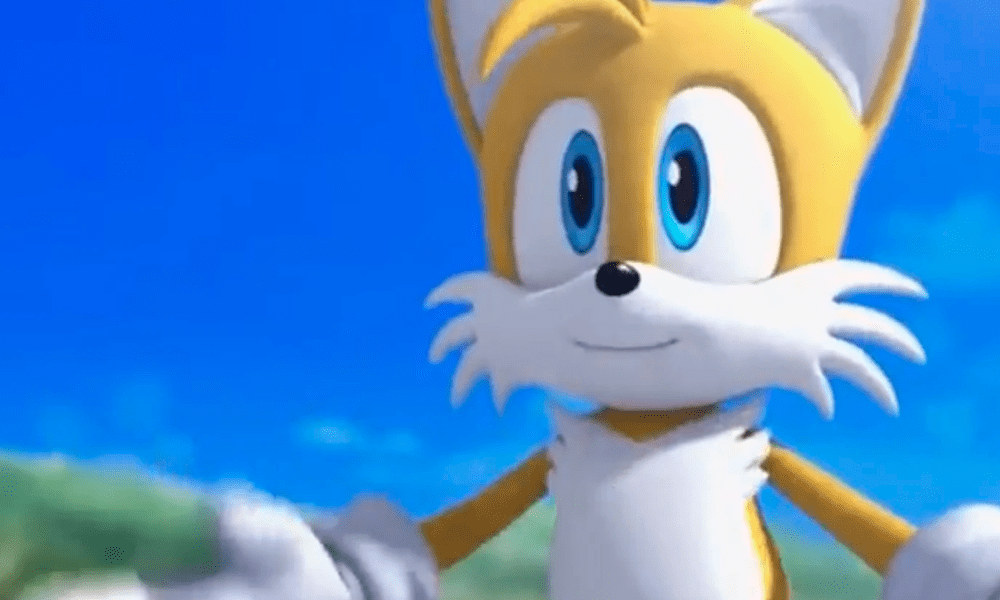
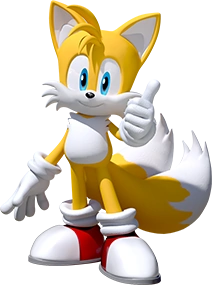
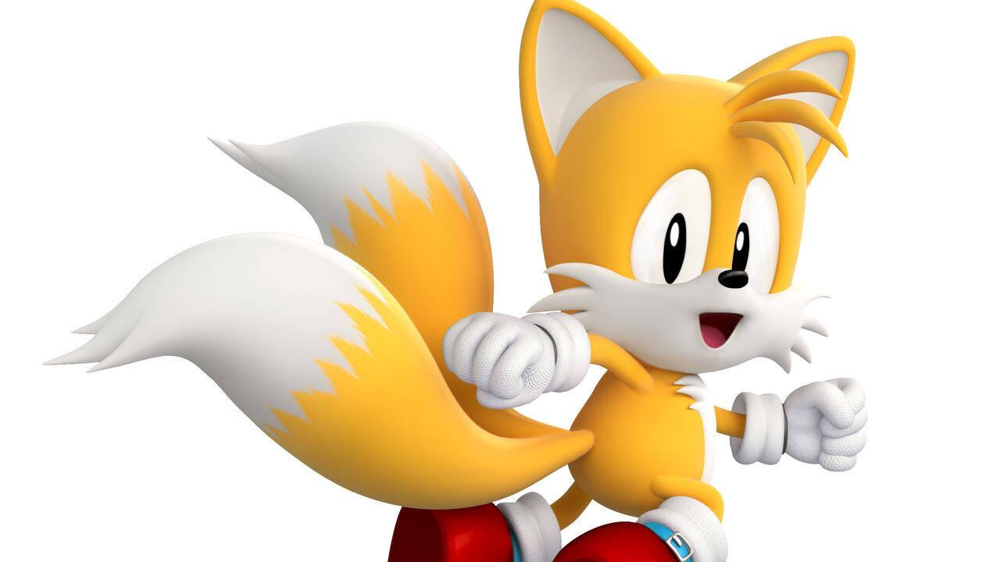
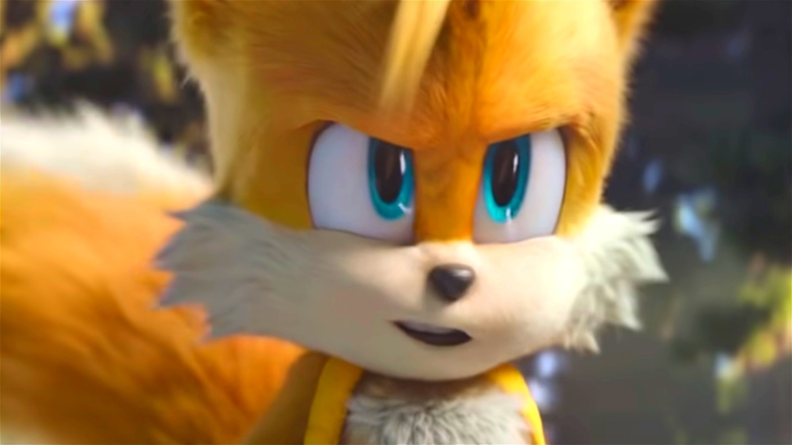

Miles Prower (マイルズ・プラウアー, lit. Mairuzu Purauā?), mejor conocido por su apodo "Tails" (テイルス, lit. Teirusu?) es un personaje de la franquicia Sonic the Hedgehog, creado por SEGA. Es un pequeño zorro antropomórfico de dos colas, gracias a las cuales, tiene la capacidad de volar (debido al giro rápido de éstas), y de nadar. Gracias a su habilidad de volar y su considerable velocidad, se convirtió en el compañero de aventuras de Sonic the Hedgehog, quien es su mejor amigo. Acompañado de su gran inteligencia y excelentes habilidades de mecánica, Tails funciona como un gran compañero durante las aventuras, siempre ayudando a los demás con una actitud humilde. Su primera aparición fue en Sonic the Hedgehog 2 (8-bit), aunque tuvo también sus propios videojuegos: Tails' Skypatrol (videojuego que no salió de Japón, hasta la llegada de Sonic Gems Collection) y Tails Adventure. Aunque en su primera aparición, el color de su pelaje fuese marrón claro, fue cambiado por un anaranjado en Sonic Adventure, pasando luego a un amarillo claro en Sonic Heroes, recuperando el anaranjado en Sonic Unleashed.
   Tails es optimista, alegre, inteligente y gentil, siempre estando dispuesto a acompañar a Sonic y a sus demás amigos en aventuras. Posee una gran inteligencia, genio y habilidades para la mecánica, aunque suele ser humilde con sus logros. Es capaz de crear sus propios inventos de alta calidad, además de que suele reparar mecanismos complejos para ayudar a sus amigos. Tails también tiene sus debilidades: siente un gran temor por los truenos y tiene la costumbre de hablar de más, como es visto en Sonic Adventure 2 donde accidentalmente reveló el plan de Sonic al Dr. Eggman. Al principio solía ser tímido, pero progresivamente se ha vuelto más abierto e incluso bromista, aunque sin perder sus buenos modales. Al igual que su mejor amigo Sonic, Tails también disfruta de las bromas, especialmente si estas van dirigidas a Eggman.
En sus primeros años, debido a su timidez, solía ser algo "inseguro" y se limitaba a ser el ayudante de Sonic. Posteriormente, gracias a las palabras de Sonic y a sus propias hazañas, Tails entendió lo importante que era valerse por sí mismo y no depender de Sonic todo el tiempo. Desde ese juego en adelante, Tails se ha vuelto más independiente y a pasado más tiempo lejos de Sonic. Sigue siendo su compañero y su amigo, pero ahora prefiere pasar más tiempo solo para así poder construir más inventos. Aun así, cuando él se encuentre en problemas, siempre podrá contar con Sonic para que lo ayude. Pese a ser humilde, tiende a tomarse muy a pecho cuando alguien critica sus inventos con mala intención (como cuando Wave the Swallow criticó su skateboard) o cuando siente que le están infravalorando, llegando a ofenderse cuando Sonic reclutó a Eggman para construir el Extractor pese a que él mismo también es capaz de construirlo. A pesar de su progreso, Tails es propenso a dudar de sí mismo e incluso caer en el auto-sabotaje. Durante Sonic Frontiers, es visto dudando de su propia persona, considerándose a sí mismo como alguien "inconsistente" y llegando al punto de creer que era "una carga para Sonic" a pesar de que este no le había dicho nada al respecto. Así mismo, es capaz de reconocer sus errores y corregirlos con el apoyo de sus seres queridos.
Apariciones en los juegos: